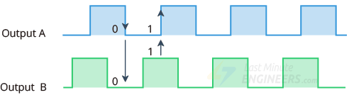
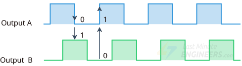

PID CONTROLLERS
WHAT
HOW
WHAT IS A PID CONTROLLER
The PID controller is a control loop feedback mechanism widely used in industrial control systems. The word controller in PID control indicates that the controllers constantly monitor the error and adjust the input to the system to reduce the error. The controller calculates an error value as the difference between the desired set point and a measured process variable. The controller attempts to reduce the error by adjusting the process input. The three PID controllers: Proportional, Integral, and Derivative control.
WORKING OF A PID CONTROLLER
A PID controller is an example of a feedback controller. These three terms (P, I, D) will be calculated in function of the error given by the sensor. Let's call these components functions to simplify things: e.g., I (e) is the integral function of the error e. The proportional controller stabilizes the gain but produces a steady state error. The integral controller reduces or eliminates the steady state error. The derivative controller reduces the rate of change of error.
How to control a DC motor with an encoder?
A rotary encoder is a type of position sensor that converts the angular position of a
knob into an output signal that is used to determine which direction the knob is being turned.
It works by observing changes to the magnetic field created by a magnet attached the motor
shaft. As
the motor rotates, the encoder outputs will trigger periodically.
Inside the encoder is a slotted disc that is connected to the common ground pin C. It also
contains
two contact pins A and B, as shown below.
When you turn the knob, A and B come into contact with the common ground pin C in a particular
order
according to the direction in which you are turning the knob.
When they come into contact with common ground, signals are generated. These signals are 90° out
of
phase with each other as one pin comes into contact with the common ground before the other pin.
This is called quadrature encoding.
When you turn the knob clockwise the A pin connects to the ground before the B pin. And when you
turn the knob counterclockwise, the B pin connects to the ground before the A pin.

By tracking when each pin connects to or disconnects from ground, we can determine which direction
the knob is being rotated. You can do this by simply observing the state of B when A changes state.
When A changes state:
- If B = A, the knob is turned counterclockwise. Rotary encoder output pulses in anticlockwise rotation
- If B ≠ A, then the knob is turned clockwise. Rotary encoder output pulses in clockwise rotation.


Applications
-
Motor protection:
Most modern controllers have the following protections - under voltage, over voltage, short circuit protection, current limit protection, thermal protection and voltage transients. Without these protections the motor is “exposed” to threats that will possibly result in permanent electrical or mechanical damage. -
Speed control:
All DC motors will lose speed as they are loaded and increase in speed when they are unloaded, in a linear fashion, according to their speed/torque gradient. For applications where a specific speed is required, with an unknown load (so a final speed cannot be calculated), or a fluctuating load (conveyor belt, pump, grinding tool, reel / converter, Cam) a controller is a must. -
Torque control:
A DC motor's current is proportional to the torque delivery. Having control over the current to the motor will govern its torque delivery. Without control of the DC motor torque/current, the motor is allowed to pull large currents that can often result in torques delivered in excess of what is mechanically viable for the system, leading to imminent failure (especially with gear with large reduction ratios). Also failure can be in the form of burn out from stalling the motor, for instance when the mechanics are jammed.